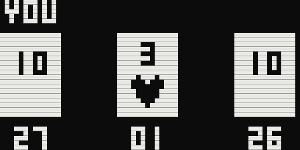
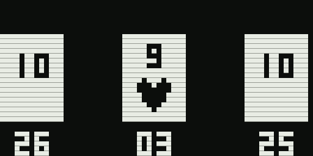

Strip Jack Naked
Lindsay R. Ford · DREAMER no. 13 (1981-09) p. 15 2K RAM



A card game against the DREAM with 27 cards each and a coin toss for the first deal. After a royal card the other player has a fixed number of cards to reply with another royal or lose a point. The graphics version, needing 2K, shows a picture sequence between rounds according to the points left.
Keys
Any key deals your card.
Files
| File | Version | Load | Run |
|---|---|---|---|
| Strip Jack Naked.d68 | main | 0080-03FF | C000 |
| Strip Jack Naked (graphics).d68 | graphics sequence | 0080-05A1 | C000 |
Listing as transcribed (with notes): strip_jack_naked.txt, strip_jack_naked_graphics.txt
Source
DREAMER no. 13 on archive.org, p. 15 (PDF page 17). Author: Lindsay R. Ford.
Corrections applied
- 020C and 03FC = 0000 (printed 2400/2404; erratum in issue 14: those values are valid only with the graphics add-on). The graphics version keeps 2400/2404.
Open doubts
- 00AC E00E has a scribble and 02F4 6E32 has '30' in pencil; printed values kept.
- The final picture was not tested.